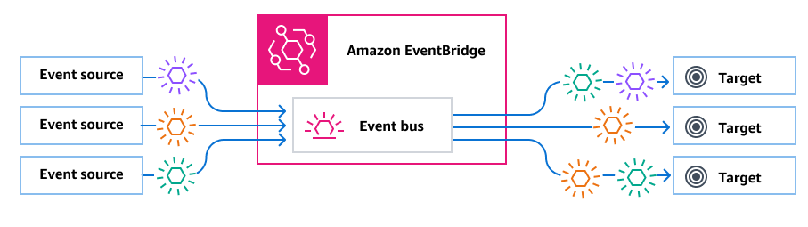
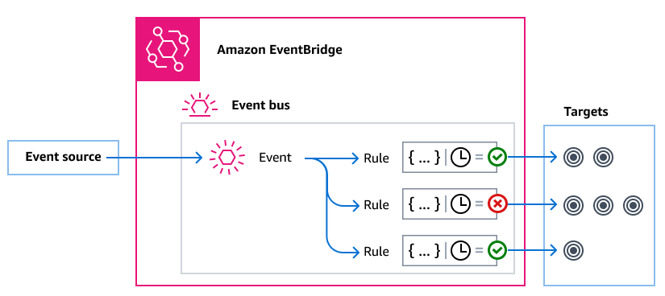

Amazon Event Bus
"Amazon EventBridge (formerly Amazon CloudWatch Events) is a serverless event bus service that makes it easy to connect application data from a variety of sources to AWS services."
An event bus is a router that receives events and delivers them to zero or more destinations, or targets. Event buses are well-suited for routing events from many sources to many targets, with optional transformation of events prior to delivery to a target.
 Rules associated with the event bus evaluate events as they arrive. Each rule checks whether an event matches the rule's pattern. If the event does match, EventBridge sends the event.
You associate a rule with a specific event bus, so the rule only applies to events received by that event bus.
Note: You can also process events using EventBridge Pipes. EventBridge Pipes is intended for point-to-point integrations; each pipe receives events from a single source for processing and delivery to a single target. Pipes also include support for advanced transformations and enrichment of events prior to delivery to a target. For more information, see Amazon EventBridge Pipes.
How it works:
Event buses enable you to route events from multiple sources to multiple destinations, or targets.
At a high level, here's how it works:
1. An event source, which can be an AWS service, your own custom application, or a SaaS provider, sends an event to an event bus.
2. EventBridge then evaluates the event against each rule defined for that event bus.
- For each event that matches a rule, EventBridge then sends the event to the targets specified for that rule. Optionally, as part of the rule, you can also specify how EventBridge should transform the event prior to sending it to the target(s).
- An event might match multiple rules, and each rule can specify up to five targets. (An event may not match any rules, in which case EventBridge takes no action.)

Consider an example using the EventBridge default event bus, which automatically receives events from AWS services:
1. You create a rule on the default event bus for the EC2 Instance State-change Notification event:
- You specify that the rule matches events where an Amazon EC2 instance has changed its state to running.
- You do this by specifying JSON that defines the attributes and values an event must match to trigger the rule. This is called an event pattern.
{
"source": ["aws.ec2"],
"detail-type": ["EC2 Instance State-change Notification"],
"detail": {
"state": ["running"]
}
}
You specify the target of the rule to be a given Lambda function.
2. Whenever an Amazon EC2 instance changes state, Amazon EC2 (the event source) automatically sends that event to the default event bus.
3. EventBridge evaluates all events sent to the default event bus against the rule you've created.
If the event matches your rule (that is, if the event was an Amazon EC2 instance changing state to running), EventBridge sends the event to the specified target. In this case, that's the Lambda function.
Amazon Event Bus
An event bus is a router that receives events and delivers them to zero or more destinations, or targets. Use an event bus when you need to route events from many sources to many targets, with optional transformation of events prior to delivery to a target.
Your account includes a default event bus that automatically receives events from AWS services. You can also:
- Create additional event buses, called custom event buses, and specify which events they receive.
- Create partner event buses, which receive events from SaaS partners.
Common use cases for event buses include:
- Using an event bus as a broker between different workloads, services, or systems.
- Using multiple event buses in your applications to divide up the event traffic. For example, creating a bus to process events containing personal identification information (PII), and another bus for events that don't.
- Aggregating events by sending events from multiple event buses to a centralized event bus. This centralized bus can be in the same account as the other buses, but can also be in a different account or Region.

Events
At its simplest, an EventBridge event is a JSON object sent to an event bus or pipe.
In the context of event-driven architecture (EDA), an event often represents an indicator of a change in a resource or environment.
For more information, see Amazon EventBridge events.
Event Sources
EventBridge can receive events from event sources including:
- AWS services
- Custom applications
- Software as a service (SaaS) partners
EventBridge Rules
A rule receives incoming events and sends them as appropriate to targets for processing. You can specify how each rule invokes their target(s) based on either:
- An event pattern, which contains one or more filters to match events. Event patterns can include filters that match on:
- Event metadata – Data about the event, such as the event source, or the account or Region in which the event originated.
- Event data – The properties of the event itself. These properties vary according to event.
- Event content – The actual property values of the event data.
- A schedule to invoke the target(s) at regular intervals.
You can specify a scheduled rule within EventBridge, or by using EventBridge Scheduler.
Note: EventBridge offers Amazon EventBridge Scheduler, a serverless scheduler that allows you to create, run, and manage tasks from one central, managed service. EventBridge Scheduler is highly customizable, and offers improved scalability over EventBridge scheduled rules, with a wider set of target API operations and AWS services. We recommend that you use EventBridge Scheduler to invoke targets on a schedule. For more information, see Using Amazon EventBridge Scheduler with Amazon EventBridge.
Each rule is defined for a specific event bus, and only applies to events on that event bus.
A single rule can send an event to up to five targets.
By default, you can configure up to 300 rules per event bus. This quota can be raised to thousands of rules in the Service Quotas console. Since the rule limit applies to each bus, if you require even more rules, you can create additional custom event buses in your account.
You can customize how events are received in your account by creating event buses with different permissions for different services.
To customize the structure or date of an event before EventBridge passes it to a target, use the input transformer to edit the information before it goes to the target.
For more information, see Amazon EventBridge rules.
EventBridge Targets
A target is a resource or endpoint to which EventBridge sends an event when the event matches the event pattern defined for a rule.
A target can receive multiple events from multiple event buses.
For more information, see Amazon EventBridge targets.
Advanced Features for Event Buses
Using API destinations to enable REST API calls between services
EventBridge API destinations are HTTP endpoints that you can set as the target of a rule, in the same way that you would send event data to an AWS service or resource. By using API destinations, you can use API calls to route events between AWS services, integrated SaaS applications, and your applications outside of AWS. When you create an API destination, you specify a connection to use for it. Each connection includes the details about the authorization type and parameters to use to authorize with the API destination endpoint.
Archiving and replaying events to aid development and disaster recovery
You can archive, or save, events and then replay them at a later time from the archive. Archiving is useful for:
- Testing an application because you have a store of events to use rather than having to wait for new events.
- Hydrating a new service when it first comes online.
- Adding more durability to your event-driven applications.
Using the Schema Registry to jump-start event pattern creation
When you build serverless applications that use EventBridge, it can be helpful to know the structure of typical events without having to generate the event. The event structure are described in schemas, which are available for all events generated by AWS services on EventBridge.
For events that don't come from AWS services, you can:
- Create or upload custom schemas.
- Use Schema Discovery to have EventBridge automatically create schemas for events sent to the event bus.
Creating an Amazon Event Bus
You can create a custom event bus to receive events from your applications. Your applications can also send events to the default event bus. When you create an event bus, you can attach a resource-based policy to grant permissions to other accounts. Then other accounts can send events to the event bus in the current account.
Create Custom Event Bus
Follow the steps below to create a custom event bus:
- Open the Amazon EventBridge console at https://console.aws.amazon.com/events/.
- In the navigation pane, choose Event buses.
- Choose Create event bus.
- Enter a name for the new event bus.
-
Configure the event bus:
- Specify a resource-based policy:
- Enter the policy that includes the permissions to grant for the event bus. You can paste in a policy from another source or enter the JSON for the policy. You can use one of the example policies and modify it for your environment.
- To use a template for the policy, choose Load template. Modify the policy as appropriate for your environment, including adding additional actions that you authorize the principal in the policy to use.
- Enable an archive (optional):
You can create an archive of events so that you can easily replay them at a later time. For example, you might want to replay events to recover from errors or to validate new functionality in your application.
- Under Archives, choose Enabled.
- Specify a name and description for the archive.
- Enable schema discovery (optional):
Enable schema discovery to have EventBridge automatically infer schemas directly from events running on this event bus.
- Under Schema discovery, choose Enabled.
- Specify tags (optional):
A tag is a custom attribute label that you assign to an AWS resource. Use tags to identify and organize your AWS resources. Many AWS services support tagging, so you can assign the same tag to resources from different services to indicate that the resources are related.
- Under Tags, choose Add new tag.
- Specify a key and, optionally, a value for the new tag.
- Choose Create.
Updating Permissions on an Event Bus
You can grant additional permissions to an event bus by attaching a resource-based policy to it.
For detailed instructions on updating the permissions given an event bus, see Managing event bus permissions.
Adding or Removing Archives on Event Buses
An archive enables you to capture events so that you can easily replay them at a later time. For example, you might want to replay events to recover from errors or to validate new functionality in your application. For more information, see EventBridge archive and replay.
To add or remove an archive from an event bus using the EventBridge console
- Open the Amazon EventBridge console at https://console.aws.amazon.com/events/.
- In the navigation pane, choose Event buses.
- Choose the event bus you want to update.
- On the events bus details page, choose the Archives tab.
- Do one of the following:
- To add an archive:
- Choose Create archive.
- Specify attributes for the archive.
- Choose Next.
- Choose the event pattern to apply to events for the archive.
- Choose Create archive.
- To delete an archive:
- For the archive you want to remove, choose Delete.
- Enter the name of the archive, and choose Delete.
- The archive is permanently deleted. You cannot undo this operation.
To create or delete an archive for an event bus using the AWS CLI
- To create an archive, use
create-archive.
- To permanently delete an archive, use
delete-archive.
Starting or Stopping Schema Discovery on Event Buses
For more information on schema discovery, see EventBridge schemas.
Using the EventBridge Console:
- Open the Amazon EventBridge console at https://console.aws.amazon.com/events/.
- In the navigation pane, choose Event buses.
- Choose the event bus you want to update.
- Do one of the following:
- To start schema discovery, choose Start discovery.
- To stop schema discovery, choose Delete discovery.
Using the AWS CLI:
- To start schema discovery, use
create-discoverer.
- To stop schema discovery, use
delete-discoverer.
Adding or Removing Tags on Event Buses
A tag is a custom attribute label that you or AWS assigns to an AWS resource. Use tags to identify and organize your AWS resources. For more information, see EventBridge tags.
Using the EventBridge Console:
- Open the Amazon EventBridge console at https://console.aws.amazon.com/events/.
- In the navigation pane, choose Event buses.
- Choose the event bus you want to update.
- On the events bus details page, choose the Tags tab, and then choose Manage tags.
- Do one of the following:
- To add a tag:
- Choose Add new tag.
- Specify the key and value for the tag.
- Choose Update.
- To remove a tag:
- For the tag you want to remove, choose Remove.
- Choose Update.
Using the AWS CLI:
- To add tags, use
tag-resource.
- To remove tags, use
untag-resource.
Deleting an Amazon Event Bus
You can delete a custom or partner event bus. However, you cannot delete the default event bus. Deleting an event bus also deletes the rules associated with that event bus.
Using the EventBridge Console:
- Open the Amazon EventBridge console at https://console.aws.amazon.com/events/.
- In the navigation pane, choose Event buses.
- Choose the event bus you want to delete.
- Do one of the following:
- Choose Delete.
- Choose the name of the event bus. On the event bus details page, choose Delete.
Permissions for Amazon Event Bus
The default event bus in your AWS account only allows events from one account. You can grant additional permissions to an event bus by attaching a resource-based policy to it. With a resource-based policy, you can allow PutEvents, PutRule, and PutTargets API calls from another account. You can also use IAM conditions in the policy to grant permissions to an organization, apply tags, or filter events to only those from a specific rule or account. You can set a resource-based policy for an event bus when you create it or afterward.
EventBridge APIs that accept an event bus Name parameter such as PutRule, PutTargets, DeleteRule, RemoveTargets, DisableRule, and EnableRule also accept the event bus ARN. Use these parameters to reference cross-account or cross-Region event buses through the APIs. For example, you can call PutRule to create a rule on an event bus in a different account without needing to assume a role.
You can attach the example policies in this topic to an IAM role to grant permission to send events to a different account or Region. Use IAM roles to set organization control policies and boundaries on who can send events from your account to other accounts. We recommend always using IAM roles when the target of a rule is an event bus. You can attach IAM roles using PutTarget calls. For information about creating a rule to send events to a different account or Region, see Sending and receiving Amazon EventBridge events between AWS accounts.
Managing Event Bus Permissions
Use the following procedure to modify the permissions for an existing event bus. For information about how to use AWS CloudFormation to create an event bus policy, see AWS::Events::EventBusPolicy.
To manage permissions for an existing event bus:
- Open the Amazon EventBridge console at https://console.aws.amazon.com/events/.
- In the left navigation pane, choose Event buses.
- In Name, choose the name of the event bus to manage permissions for.
- If a resource policy is attached to the event bus, the policy displays.
- Choose Manage permissions, and then do one of the following:
- Enter the policy that includes the permissions to grant for the event bus. You can paste in a policy from another source, or enter the JSON for the policy.
- To use a template for the policy, choose Load template. Modify the policy as appropriate for your environment, and add additional actions that you authorize the principal in the policy to use.
- Choose Update.
The template provides example policy statements that you can customize for your account and environment. The template isn't a valid policy. You can modify the template for your use case, or you can copy one of the example policies and customize it.
The template loads policies that include an example of how to grant permissions to an account to use the PutEvents action, how to grant permissions to an organization, and how to grant permissions to the account to manage rules in the account. You can customize the template for your specific account, and then delete the other sections from the template. More example policies are included later in this topic.
If you try to update the permissions for the bus but the policy contains an error, an error message indicates the specific issue in the policy.
### Choose which sections to include in the policy to match your use case. ###
### Be sure to remove all lines that start with ###, including the ### at the end of the line. ###
### The policy must include the following: ###
{
"Version": "2012-10-17",
"Statement": [
### To grant permissions for an account to use the PutEvents action, include the following, otherwise delete this section: ###
{
"Sid": "AllowAccountToPutEvents",
"Effect": "Allow",
"Principal": {
"AWS": ""
},
"Action": "events:PutEvents",
"Resource": "arn:aws:events:us-east-1:123456789012:event-bus/default"
},
### Include the following section to grant permissions to all members of your AWS Organizations to use the PutEvents action ###
{
"Sid": "AllowAllAccountsFromOrganizationToPutEvents",
"Effect": "Allow",
"Principal": "*",
"Action": "events:PutEvents",
"Resource": "arn:aws:events:us-east-1:123456789012:event-bus/default",
"Condition": {
"StringEquals": {
"aws:PrincipalOrgID": "o-yourOrgID"
}
}
},
### Include the following section to grant permissions to the account to manage the rules created in the account ###
{
"Sid": "AllowAccountToManageRulesTheyCreated",
"Effect": "Allow",
"Principal": {
"AWS": ""
},
"Action": [
"events:PutRule",
"events:PutTargets",
"events:DeleteRule",
"events:RemoveTargets",
"events:DisableRule",
"events:EnableRule",
"events:TagResource",
"events:UntagResource",
"events:DescribeRule",
"events:ListTargetsByRule",
"events:ListTagsForResource"],
"Resource": "arn:aws:events:us-east-1:123456789012:rule/default",
"Condition": {
"StringEqualsIfExists": {
"events:creatorAccount": ""
}
}
}]
}
Example Policy: Send Events to the Default Bus in a Different Account
The following example policy grants the account 111122223333 permission to publish events to the default event bus in the account 123456789012.
{
"Version": "2012-10-17",
"Statement": [
{
"Sid": "sid1",
"Effect": "Allow",
"Principal": {"AWS":"arn:aws:iam::111112222333:root"},
"Action": "events:PutEvents",
"Resource": "arn:aws:events:us-east-1:123456789012:event-bus/default"
}
]
}
Example Policy: Send Events to a Custom Bus in a Different Account
The following example policy grants the account 111122223333 permission to publish events to the central-event-bus in account 123456789012, but only for events with a source value set to com.exampleCorp.webStore and a detail-type set to newOrderCreated.
{
"Version": "2012-10-17",
"Statement": [
{
"Sid": "WebStoreCrossAccountPublish",
"Effect": "Allow",
"Action": [
"events:PutEvents"
],
"Principal": {
"AWS": "arn:aws:iam::111112222333:root"
},
"Resource": "arn:aws:events:us-east-1:123456789012:event-bus/central-event-bus",
"Condition": {
"StringEquals": {
"events:detail-type": "newOrderCreated",
"events:source": "com.exampleCorp.webStore"
}
}
}
]
}
Example Policy: Send Events to an Event Bus in the Same Account
The following example policy attached to an event bus named CustomBus1 allows the event bus to receive events from the same account and Region.
{
"Version": "2012-10-17",
"Statement": [
{
"Effect": "Allow",
"Action": [
"events:PutEvents"
],
"Resource": [
"arn:aws:events:us-east-1:123456789:event-bus/CustomBus1"
]
}
]
}
Example Policy: Send Events to the Same Account and Restrict Updates
The following example policy grants account 123456789012 permission to create, delete, update, disable, and enable rules, and add or remove targets. It limits these rules that match against events with a source of com.exampleCorp.webStore, and it uses the events:creatorAccount condition to ensure that only account 123456789012 can modify these rules and targets once they have been created.
{
"Version": "2012-10-17",
"Statement": [
{
"Sid": "InvoiceProcessingRuleCreation",
"Effect": "Allow",
"Principal": {
"AWS": "arn:aws:iam::123456789012:root"
},
"Action": [
"events:PutRule",
"events:DeleteRule",
"events:DescribeRule",
"events:DisableRule",
"events:EnableRule",
"events:PutTargets",
"events:RemoveTargets"
],
"Resource": "arn:aws:events:us-east-1:123456789012:rule/central-event-bus/*",
"Condition": {
"StringEqualsIfExists": {
"events:creatorAccount": "${aws:PrincipalAccount}",
"events:source": "com.exampleCorp.webStore"
}
}
}
]
}
Example Policy: Send Events Only from a Specific Rule to the Bus in a Different Region
The following example policy grants the account 111122223333 permission to send events that match a rule named SendToUSE1AnotherAccount in the Middle East (Bahrain) and US West (Oregon) Regions to an event bus named CrossRegionBus in the US East (N. Virginia) in account 123456789012. The example policy is added to the event bus named CrossRegionBus in account 123456789012. The policy allows events only if they match a rule specified for the event bus in account 111122223333. The Condition statement restricts events to only events that match the rules with the specified rule ARN.
{
"Version": "2012-10-17",
"Statement": [
{
"Sid": "AllowSpecificRulesAsCrossRegionSource",
"Effect": "Allow",
"Principal": {
"AWS": "arn:aws:iam::111112222333:root"
},
"Action": "events:PutEvents",
"Resource": "arn:aws:events:us-east-1:123456789012:event-bus/CrossRegionBus",
"Condition": {
"ArnEquals": {
"aws:SourceArn": [
"arn:aws:events:us-west-2:111112222333:rule/CrossRegionBus/SendToUSE1AnotherAccount",
"arn:aws:events:me-south-1:111112222333:rule/CrossRegionBus/SendToUSE1AnotherAccount"
]
}
}
}
]
}
Example Policy: Send Events Only from a Specific Region to a Different Region
The following example policy grants account 111122223333 permission to send all events that are generated in the Middle East (Bahrain) and US West (Oregon) Regions to the event bus named CrossRegionBus in account 123456789012 in the US East (N. Virginia) Region. Account 111122223333 doesn't have permission to send events that are generated in any other Region.
{
"Version": "2012-10-17",
"Statement": [
{
"Sid": "AllowCrossRegionEventsFromUSWest2AndMESouth1",
"Effect": "Allow",
"Principal": {
"AWS": "arn:aws:iam::111112222333:root"
},
"Action": "events:PutEvents",
"Resource": "arn:aws:events:us-east-1:123456789012:event-bus/CrossRegionBus",
"Condition": {
"ArnEquals": {
"aws:SourceArn": [
"arn:aws:events:us-west-2:*:*",
"arn:aws:events:me-south-1:*:*"
]
}
}
}
]
}
Example Policy: Deny Sending Events from Specific Regions
The following example policy attached to an event bus named CrossRegionBus in account 123456789012 grants permission for the event bus to receive events from the account 111122223333, but not events that are generated in the US West (Oregon) Region.
{
"Version": "2012-10-17",
"Statement": [
{
"Sid": "1AllowAnyEventsFromAccount111112222333",
"Effect": "Allow",
"Principal": {
"AWS": "arn:aws:iam::111112222333:root"
},
"Action": "events:PutEvents",
"Resource": "arn:aws:events:us-east-1:123456789012:event-bus/CrossRegionBus"
},
{
"Sid": "2DenyAllCrossRegionUSWest2Events",
"Effect": "Deny",
"Principal": {
"AWS": "*"
},
"Action": "events:PutEvents",
"Resource": "arn:aws:events:us-east-1:123456789012:event-bus/CrossRegionBus",
"Condition": {
"ArnEquals": {
"aws:SourceArn": [
"arn:aws:events:us-west-2:*:*"
]
}
}
}
]
}
Generate an AWS CloudFormation template from an Amazon EventBridge event bus
AWS CloudFormation enables you to configure and manage your AWS resources across accounts and regions in a centralized and repeatable manner by treating infrastructure as code. CloudFormation does this by letting you create templates, which define the resources you want to provision and manage.
EventBridge enables you to generate templates from the existing event buses in your account, as an aid to help you jumpstart developing CloudFormation templates. In addition, EventBridge provides the option of including the rules associated with that event bus in your template. You can then use these templates as the basis for creating stacks of resources under CloudFormation management.
For more information on CloudFormation, see The AWS CloudFormation User Guide.
Note: EventBridge does not include managed rules in the generated template.
You can also generate a template from one or more rules contained in a selected event bus.
Generating CloudFormation Template from Event Bus
- Open the Amazon EventBridge console at https://console.aws.amazon.com/events/.
- In the navigation pane, choose Event buses.
- Choose the event bus from which you want to generate a CloudFormation template.
- From the Actions menu, choose CloudFormation Template, and then choose which format you want EventBridge to generate the template in: JSON or YAML.
- EventBridge displays the template, generated in the selected format. By default, all rules associated with the event bus are included in the template.
- To generate the template without including rules, deselect Include rules on this EventBus.
- EventBridge gives you the option of downloading the template file, or copying the template to the clipboard.
- To download the template file, choose Download.
- To copy the template to the clipboard, choose Copy.
- To exit the template, choose Cancel.
Once you've customized your AWS CloudFormation template as necessary for your use case, you can use it to create stacks in CloudFormation.
Considerations when Using CloudFormation Templates Generated from Amazon EventBridge
Consider the following factors when using a CloudFormation template you generated from an event bus:
- EventBridge does not include any passwords in the generated template.
- You can edit the template to include template parameters that enable users to specify passwords or other sensitive information when using the template to create or update a CloudFormation stack.
- In addition, users can use Secrets Manager to create a secret in the desired region and then edit the generated template to employ dynamic parameters.
- Targets in the generated template remain exactly as they were specified in the original event bus. This can lead to cross-region issues if you do not appropriately edit the template before using it to create stacks in other regions.
- Additionally, the generated template will not create the downstream targets automatically.
Congratulations!
"Congratulations on leveraging Amazon EventBridge! With seamless event-driven architecture, efficiently integrate and communicate across AWS services. May your event buses be precise, rules effective, and targets always met. Wishing you success in your event-routing endeavors!"👏🚀